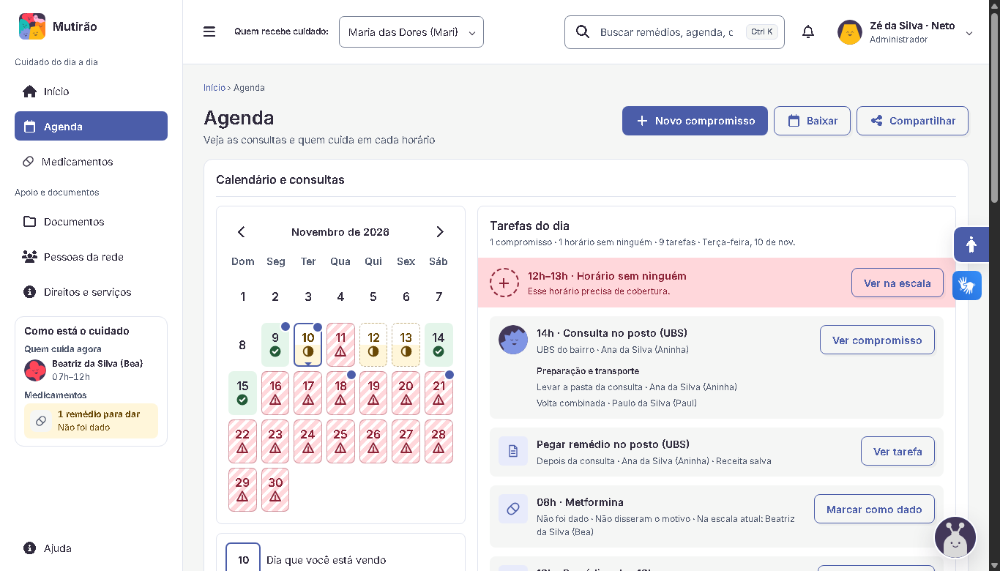
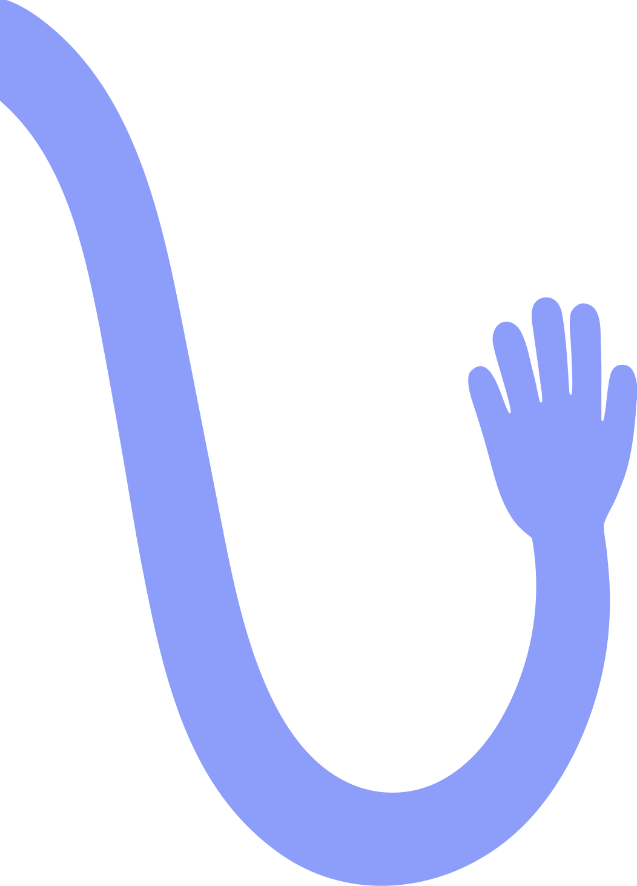

Agenda do mês, tarefas e escala combinada
Acompanhe o calendário mensal com o status de cada dia, veja os compromissos e tarefas de hoje em um só lugar e assuma horários descobertos pontuais ou recorrentes sem depender de mensagens soltas no grupo.